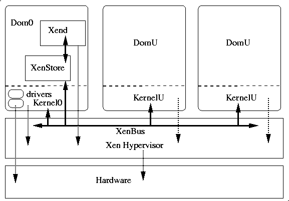

Libvirt is a C toolkit to interact with the virtualization capabilities of recent versions of Linux (and other OSes). It is free software available under the GNU Lesser General Public License. Virtualization of the Linux Operating System means the ability to run multiple instances of Operating Systems concurently on a single hardware system where the basic resources are driven by a Linux (or Solaris) instance. The library aim at providing long term stable C API initially for the Xen paravirtualization but should be able to integrate other virtualization mechanisms, it currently also support QEmu and KVM.
Here is the list of official releases, however since it is early on in the development of libvirt, it is preferable when possible to just use the CVS version or snapshot, contact the mailing list and check the ChangeLog to gauge progresses.
Libvirt is a C toolkit to interact with the virtualization capabilities of recent versions of Linux (and other OSes), but libvirt won't try to provide all possible interfaces for interacting with the virtualization features.
To avoid ambiguity about the terms used here here are the definitions for some of the specific concepts used in libvirt documentation:
Now we can define the goal of libvirt: to provide the lowest possible generic and stable layer to manage domains on a node.
This implies the following:
So libvirt should be a building block for higher level management tools and for applications focusing on virtualization of a single node (the only exception being domain migration between node capabilities which may need to be added at the libvirt level). Where possible libvirt should be extendable to be able to provide the same API for remote nodes, however this is not the case at the moment, the code currently handle only local node accesses (extension for remote access support is being worked on, see the mailing list discussions about it).
Currently libvirt supports 2 kind of virtualization, and its internal structure is based on a driver model which simplifies adding new engines:
When running in a Xen environment, programs using libvirt have to execute in "Domain 0", which is the primary Linux OS loaded on the machine. That OS kernel provides most if not all of the actual drivers used by the set of domains. It also runs the Xen Store, a database of informations shared by the hypervisor, the kernels, the drivers and the xen daemon. Xend. The xen daemon supervise the control and execution of the sets of domains. The hypervisor, drivers, kernels and daemons communicate though a shared system bus implemented in the hypervisor. The figure below tries to provide a view of this environment:
The library can be initialized in 2 ways depending on the level of priviledge of the embedding program. If it runs with root access, virConnectOpen() can be used, it will use three different ways to connect to the Xen infrastructure:
The library will usually interact with the Xen daemon for any operation changing the state of the system, but for performance and accuracy reasons may talk directly to the hypervisor when gathering state informations at least when possible (i.e. when the running program using libvirt has root priviledge access).
If it runs without root access virConnectOpenReadOnly() should be used to connect to initialize the library. It will then fork a libvirt_proxy program running as root and providing read_only access to the API, this is then only useful for reporting and monitoring.
The model for QEmu and KVM is completely similar, basically KVM is based on QEmu for the process controlling a new domain, only small details differs between the two. In both case the libvirt API is provided by a controlling process forked by libvirt in the background and which launch and control the QEmu or KVM process. That program called libvirt_qemud talks though a specific protocol to the library, and connects to the console of the QEmu process in order to control and report on its status. Libvirt tries to expose all the emulations models of QEmu, the selection is done when creating the new domain, by specifying the architecture and machine type targetted.
The code controlling the QEmu process is available in the
qemud/ directory.
As the previous section explains, libvirt can communicate using different channels with the current hypervisor, and should also be able to use different kind of hypervisor. To simplify the internal design, code, ease maintainance and simplify the support of other virtualization engine the internals have been structured as one core component, the libvirt.c module acting as a front-end for the library API and a set of hypvisor drivers defining a common set of routines. That way the Xen Daemon accces, the Xen Store one, the Hypervisor hypercall are all isolated in separate C modules implementing at least a subset of the common operations defined by the drivers present in driver.h:
proxy/directory.Note that a given driver may only implement a subset of those functions, (for example saving a Xen domain state to disk and restoring it is only possible though the Xen Daemon), in that case the driver entry points for unsupported functions are initialized to NULL.
The latest versions of libvirt can be found on the libvirt.org server ( HTTP, FTP). You will find there the released versions as well as snapshot tarballs updated from CVS head every hour
Anonymous CVS is also available, first register onto the server:
cvs -d :pserver:anoncvs@libvirt.org:2401/data/cvs login
it will request a password, enter anoncvs. Then you can checkout the development tree with:
cvs -d :pserver:anoncvs@libvirt.org:2401/data/cvs co
libvirt
Use ./autogen.sh to configure the local checkout, then make
and make install, as usual. All normal cvs commands are now
available except commiting to the base.
This section describes the XML format used to represent domains, there are variations on the format based on the kind of domains run and the options used to launch them:
The formats try as much as possible to follow the same structure and reuse elements and attributes where it makes sense.
The library use an XML format to describe domains, as input to virDomainCreateLinux()
and as the output of virDomainGetXMLDesc(),
the following is an example of the format as returned by the shell command
virsh xmldump fc4 , where fc4 was one of the running domains:
<domain type='xen' id='18'> <name>fc4</name> <os> <type>linux</type> <kernel>/boot/vmlinuz-2.6.15-1.43_FC5guest</kernel> <initrd>/boot/initrd-2.6.15-1.43_FC5guest.img</initrd> <root>/dev/sda1</root> <cmdline> ro selinux=0 3</cmdline> </os> <memory>131072</memory> <vcpu>1</vcpu> <devices> <disk type='file'> <source file='/u/fc4.img'/> <target dev='sda1'/> </disk> <interface type='bridge'> <source bridge='xenbr0'/> <mac address='aa:00:00:00:00:11'/> <script path='/etc/xen/scripts/vif-bridge'/> </interface> <console tty='/dev/pts/5'/> </devices> </domain>
The root element must be called domain with no namespace, the
type attribute indicates the kind of hypervisor used, 'xen' is
the default value. The id attribute gives the domain id at
runtime (not however that this may change, for example if the domain is saved
to disk and restored). The domain has a few children whose order is not
significant:
disk, interface and
console descriptions in no special orderThe format of the devices and their type may grow over time, but the following should be sufficient for basic use:
A disk device indicates a block device, it can have two
values for the type attribute either 'file' or 'block' corresponding to the 2
options available at the Xen layer. It has two mandatory children, and one
optional one in no specific order:
An interface element describes a network device mapped on the
guest, it also has a type whose value is currently 'bridge', it also have a
number of children in no specific order:
A console element describes a serial console connection to
the guest. It has no children, and a single attribute tty which
provides the path to the Pseudo TTY on which the guest console can be
accessed
Life cycle actions for the domain can also be expressed in the XML format, they drive what should be happening if the domain crashes, is rebooted or is poweroff. There is various actions possible when this happen:
The following could be used for a Xen production system:
<domain> ... <on_reboot>restart</on_reboot> <on_poweroff>destroy</on_poweroff> <on_crash>rename-restart</on_crash> ... </domain>
While the format may be extended in various ways as support for more hypervisor types and features are added, it is expected that this core subset will remain functional in spite of the evolution of the library.
Here is an example of a domain description used to start a fully virtualized (a.k.a. HVM) Xen domain. This requires hardware virtualization support at the processor level but allows to run unmodified operating systems:
<domain type='xen' id='3'>
<name>fv0</name>
<uuid>4dea22b31d52d8f32516782e98ab3fa0</uuid>
<os>
<type>hvm</type>
<loader>/usr/lib/xen/boot/hvmloader</loader>
<boot dev='hd'/>
</os>
<memory>524288</memory>
<vcpu>1</vcpu>
<on_poweroff>destroy</on_poweroff>
<on_reboot>restart</on_reboot>
<on_crash>restart</on_crash>
<features>
<pae/>
<acpi/>
<apic/>
</features>
<clock sync="localtime"/>
<devices>
<emulator>/usr/lib/xen/bin/qemu-dm</emulator>
<interface type='bridge'>
<source bridge='xenbr0'/>
<mac address='00:16:3e:5d:c7:9e'/>
<script path='vif-bridge'/>
</interface>
<disk type='file'>
<source file='/root/fv0'/>
<target dev='hda'/>
</disk>
<disk type='file' device='cdrom'>
<source file='/root/fc5-x86_64-boot.iso'/>
<target dev='hdc'/>
<readonly/>
</disk>
<disk type='file' device='floppy'>
<source file='/root/fd.img'/>
<target dev='fda'/>
</disk>
<graphics type='vnc' port='5904'/>
</devices>
</domain>
There is a few things to notice specifically for HVM domains:
<features> block is used to enable
certain guest CPU / system features. For HVM guests the following
features are defined:
pae - enable PAE memory addressingapic - enable IO APICacpi - enable ACPI bios<clock> element is used to specify
whether the emulated BIOS clock in the guest is synced to either
localtime or utc. In general Windows will
want localtime while all other operating systems will
want utc. The default is thus utc<os> block description is very different, first
it indicates that the type is 'hvm' for hardware virtualization, then
instead of a kernel, boot and command line arguments, it points to an os
boot loader which will extract the boot informations from the boot device
specified in a separate boot element. The dev attribute on
the boot tag can be one of:
fd - boot from first floppy devicehd - boot from first harddisk devicecdrom - boot from first cdrom device<devices> section includes an emulator entry
pointing to an additional program in charge of emulating the deviceshda-hdd, or a floppy device
fda, fdb. The <disk> element
also supports a 'device' attribute to indicate what kinda of hardware to
emulate. The following values are supported:
floppy - a floppy disk controllerdisk - a generic hard drive (the default it
omitted)cdrom - a CDROM devicehdc channel, while for 3.0.3 and later, it can be emulated
on any IDE channel.<devices> section also include at least one
entry for the graphic device used to render the os. Currently there is
just 2 types possible 'vnc' or 'sdl'. If the type is 'vnc', then an
additional port attribute will be present indicating the TCP
port on which the VNC server is accepting client connections.It is likely that the HVM description gets additional optional elements and attributes as the support for fully virtualized domain expands, especially for the variety of devices emulated and the graphic support options offered.
Support for the KVM virtualization is provided in recent Linux kernels (2.6.20 and onward). This requires specific hardware with acceleration support and the availability of the special version of the QEmu binary. Since this relies on QEmu for the machine emulation like fully virtualized guests the XML description is quite similar, here is a simple example:
<domain type='kvm'> <name>demo2</name> <uuid>4dea24b3-1d52-d8f3-2516-782e98a23fa0</uuid> <memory>131072</memory> <vcpu>1</vcpu> <os> <type>hvm</type> </os> <clock sync="localtime"/> <devices> <emulator>/home/user/usr/kvm-devel/bin/qemu-system-x86_64</emulator> <disk type='file' device='disk'> <source file='/home/user/fedora/diskboot.img'/> <target dev='hda'/> </disk> <interface type='user'> <mac address='24:42:53:21:52:45'/> </interface> <graphics type='vnc' port='-1'/> </devices> </domain>
The specific points to note if using KVM are:
except those points the options should be quite similar to Xen HVM ones.
The networking support in the QEmu and KVM case is more flexible, and support a variety of options:
Provides a virtual LAN with NAT to the outside world. The virtual
network has DHCP & DNS services and will give the guest VM addresses
starting from 10.0.2.15. The default router will be
10.0.2.2 and the DNS server will be 10.0.2.3.
This networking is the only option for unprivileged users who need their
VMs to have outgoing access. Example configs are:
<interface type='user'/>
<interface type='user'>
<mac address="11:22:33:44:55:66:/>
</interface>
Provides a virtual network using a bridge device in the host.
Depending on the virtual network configuration, the network may be
totally isolated, NAT'ing to an explicit network device, or NAT'ing to
the default route. DHCP and DNS are provided on the virtual network in
all cases and the IP range can be determined by examining the virtual
network config with 'virsh net-dumpxml <network
name>'. There is one virtual network called 'default' setup out
of the box which does NAT'ing to the default route and has an IP range of
192.168.22.0/255.255.255.0. Each guest will have an
associated tun device created with a name of vnetN, which can also be
overriden with the <target> element. Example configs are:
<interface type='network'>
<source network='default'/>
</interface>
<interface type='network'>
<source network='default'/>
<target dev='vnet7'/>
<mac address="11:22:33:44:55:66:/>
</interface>
Provides a bridge from the VM directly onto the LAN. This assumes there is a bridge device on the host which has one or more of the hosts physical NICs enslaved. The guest VM will have an associated tun device created with a name of vnetN, which can also be overriden with the <target> element. The tun device will be enslaved to the bridge. The IP range / network configuration is whatever is used on the LAN. This provides the guest VM full incoming & outgoing net access just like a physical machine. Examples include:
<interface type='bridge'>
<source dev='br0'/>
</interface>
<interface type='bridge'>
<source dev='br0'/>
<target dev='vnet7'/>
<mac address="11:22:33:44:55:66:/>
</interface> <interface type='bridge'>
<source dev='br0'/>
<target dev='vnet7'/>
<mac address="11:22:33:44:55:66:/>
</interface>
Provides a means for the administrator to execute an arbitrary script to connect the guest's network to the LAN. The guest will have a tun device created with a name of vnetN, which can also be overriden with the <target> element. After creating the tun device a shell script will be run which is expected to do whatever host network integration is required. By default this script is called /etc/qemu-ifup but can be overriden.
<interface type='ethernet'/> <interface type='ethernet'> <target dev='vnet7'/> <script path='/etc/qemu-ifup-mynet'/> </interface>
A multicast group is setup to represent a virtual network. Any VMs whose network devices are in the same multicast group can talk to each other even across hosts. This mode is also available to unprivileged users. There is no default DNS or DHCP support and no outgoing network access. To provide outgoing network access, one of the VMs should have a 2nd NIC which is connected to one of the first 4 network types and do the appropriate routing. The multicast protocol is compatible with that used by user mode linux guests too. The source address used must be from the multicast address block.
<interface type='mcast'> <source address='230.0.0.1' port='5558'/> </interface>
A TCP client/server architecture provides a virtual network. One VM provides the server end of the network, all other VMS are configured as clients. All network traffic is routed between the VMs via the server. This mode is also available to unprivileged users. There is no default DNS or DHCP support and no outgoing network access. To provide outgoing network access, one of the VMs should have a 2nd NIC which is connected to one of the first 4 network types and do the appropriate routing.
Example server config:
<interface type='server'> <source address='192.168.0.1' port='5558'/> </interface>
Example client config:
<interface type='client'> <source address='192.168.0.1' port='5558'/> </interface>
To be noted, options 2, 3, 4 are also supported by Xen VMs, so it is possible to use these configs to have networking with both Xen & QEMU/KVMs connected to each other.
Libvirt support for KVM and QEmu is the same code base with only minor changes. The configuration is as a result nearly identical, the only changes are related to QEmu ability to emulate various CPU type and hardware platforms, and kqemu support (QEmu own kernel accelerator when the emulated CPU is i686 as well as the target machine):
<domain type='qemu'> <name>QEmu-fedora-i686</name> <uuid>c7a5fdbd-cdaf-9455-926a-d65c16db1809</uuid> <memory>219200</memory> <currentMemory>219200</currentMemory> <vcpu>2</vcpu> <os> <type arch='i686' machine='pc'>hvm</type> <boot dev='cdrom'/> </os> <devices> <emulator>/usr/bin/qemu</emulator> <disk type='file' device='cdrom'> <source file='/home/user/boot.iso'/> <target dev='hdc'/> <readonly/> </disk> <disk type='file' device='disk'> <source file='/home/user/fedora.img'/> <target dev='hda'/> </disk> <interface type='network'> <source name='default'/> </interface> <graphics type='vnc' port='-1'/> </devices> </domain>
The difference here are:
As new virtualization engine support gets added to libvirt, and to handle cases like QEmu supporting a variety of emulations, a query interface has been added in 0.2.1 allowing to list the set of supported virtualization capabilities on the host:
char * virConnectGetCapabilities (virConnectPtr conn);
The value returned is an XML document listing the virtualization
capabilities of the host and virtualization engine to which
@conn is connected. One can test it using virsh
command line tool command 'capabilities', it dumps the XML
associated to the current connection. For example in the case of a 64 bits
machine with hardware virtualization capabilities enabled in the chip and
BIOS you will see
<capabilities> <host> <cpu> <arch>x86_64</arch> <features> <vmx/> </features> </cpu> </host> <!-- xen-3.0-x86_64 --> <guest> <os_type>xen</os_type> <arch name="x86_64"> <wordsize>64</wordsize> <domain type="xen"></domain> <emulator>/usr/lib64/xen/bin/qemu-dm</emulator> </arch> <features> </features> </guest> <!-- hvm-3.0-x86_32 --> <guest> <os_type>hvm</os_type> <arch name="i686"> <wordsize>32</wordsize> <domain type="xen"></domain> <emulator>/usr/lib/xen/bin/qemu-dm</emulator> <machine>pc</machine> <machine>isapc</machine> <loader>/usr/lib/xen/boot/hvmloader</loader> </arch> <features> </features> </guest> ... </capabilities>
The first block (in red) indicates the host hardware capbilities, currently it is limited to the CPU properties but other information may be available, it shows the CPU architecture, and the features of the chip (the feature block is similar to what you will find in a Xen fully virtualized domain description).
The second block (in blue) indicates the paravirtualization support of the Xen support, you will see the os_type of xen to indicate a paravirtual kernel, then architecture informations and potential features.
The third block (in green) gives similar informations but when running a 32 bit OS fully virtualized with Xen using the hvm support.
This section is likely to be updated and augmented in the future, see the discussion which led to the capabilities format in the mailing-list archives.
Libvirt comes with direct support for the Python language (just make sure you installed the libvirt-python package if not compiling from sources). Also note that Daniel Berrange provides bindings for Perl and Richard Jones supplies bindings for OCaml too.
The Python binding should be complete and are mostly automatically
generated from the formal description of the API in xml. The bindings are
articulated around 2 classes virConnect and virDomain mapping to
the C types. Functions in the C API taking either type as argument then
becomes methods for the classes, their name is just stripped from the
virConnect or virDomain(Get) prefix and the first letter gets converted to
lower case, for example the C functions:
int virConnectNumOfDomains
(virConnectPtr conn);
int virDomainSetMaxMemory
(virDomainPtr domain, unsigned long memory);
become
virConn::numOfDomains(self)
virDomain::setMaxMemory(self, memory)
This process is fully automated, you can get a summary of the conversion in the file libvirtclass.txt present in the python dir or in the docs.There is a couple of function who don't map directly to their C counterparts due to specificities in their argument conversions:
virConnectListDomains
is replaced by virDomain::listDomainsID(self) which returns
a list of the integer ID for the currently running domainsvirDomainGetInfo
is replaced by virDomain::info() which returns a list of
So let's look at a simple example inspired from the basic.py
test found in python/tests/ in the source tree:
import libvirt import sys conn = libvirt.openReadOnly(None) if conn == None: print 'Failed to open connection to the hypervisor' sys.exit(1) try: dom0 = conn.lookupByName("Domain-0") except: print 'Failed to find the main domain' sys.exit(1) print "Domain 0: id %d running %s" % (dom0.ID(), dom0.OSType()) print dom0.info()
There is not much to comment about it, it really is a straight mapping from the C API, the only points to notice are:
libvirtThe main goals of libvirt when it comes to error handling are:
As result the library provide both synchronous, callback based and asynchronous error reporting. When an error happens in the library code the error is logged, allowing to retrieve it later and if the user registered an error callback it will be called synchronously. Once the call to libvirt ends the error can be detected by the return value and the full information for the last logged error can be retrieved.
To avoid as much as prossible troubles with a global variable in a multithreaded environment, libvirt will associate when possible the errors to the current connection they are related to, that way the error is stored in a dynamic structure which can be made thread specific. Error callback can be set specifically to a connection with
So error handling in the code is the following:
In all cases the error informations are provided as a virErrorPtr pointer to read-only structure virError containing the following fields:
and then extra raw informations about the error which may be initialized to 0 or NULL if unused
So usually, setting up specific error handling with libvirt consist of registering an handler with with virSetErrorFunc or with virConnSetErrorFunc, chech the value of the code value, take appropriate action, if needed let libvirt print the error on stderr by calling virDefaultErrorFunc. For asynchronous error handing, set such a function doing nothing to avoid the error being reported on stderr, and call virConnGetLastError or virGetLastError when an API call returned an error value. It can be a good idea to use virResetError or virConnResetLastError once an error has been processed fully.
At the python level, there only a global reporting callback function at this point, see the error.py example about it:
def handler(ctxt, err):
global errno
#print "handler(%s, %s)" % (ctxt, err)
errno = err
libvirt.registerErrorHandler(handler, 'context')
the second argument to the registerErrorHandler function is passed as the first argument of the callback like in the C version. The error is a tuple containing the same field as a virError in C, but cast to Python.
Table of Contents:
libvirt is released under the GNU Lesser General Public License, see the file COPYING.LIB in the distribution for the precise wording. The only library that libvirt depends upon is the Xen store access library which is also licenced under the LGPL.
Yes. The LGPL allows you to embed libvirt into a proprietary application. It would be graceful to send-back bug fixes and improvements as patches for possible incorporation in the main development tree. It will decrease your maintainance costs anyway if you do so.
The original distribution comes from ftp://libvirt.org/libvirt/.
The most generic solution is to re-fetch the latest src.rpm , and rebuild it locally with
rpm --rebuild libvirt-xxx.src.rpm.
If everything goes well it will generate two binary rpm packages (one providing the shared libs and virsh, and the other one, the -devel package, providing includes, static libraries and scripts needed to build applications with libvirt that you can install locally.
One can also rebuild the RPMs from a tarball:
rpmbuild -ta libdir-xxx.tar.gz
Or from a configured tree with:
make rpm
Large parts of the API may only be accessible with root priviledges, however the read only access to the xenstore data doesnot have to be forbidden to user, at least for monitoring purposes. If "virsh dominfo" fails to run as an user, change the mode of the xenstore read-only socket with:
chmod 666 /var/run/xenstored/socket_ro
and also make sure that the Xen Daemon is running correctly with local
HTTP server enabled, this is defined in
/etc/xen/xend-config.sxp which need the following line to be
enabled:
(xend-http-server yes)
If needed restart the xend daemon after making the change with the following command run as root:
service xend restart
As most UNIX libraries libvirt follows the "standard":
gunzip -c libvirt-xxx.tar.gz | tar xvf -
cd libvirt-xxxx
./configure --help
to see the options, then the compilation/installation proper
./configure [possible options]
make
make install
At that point you may have to rerun ldconfig or a similar utility to update your list of installed shared libs.
Libvirt requires libxenstore, which is usually provided by the xen packages as well as the public headers to compile against libxenstore.
The configure script (and other Makefiles) are generated. Use the autogen.sh script to regenerate the configure script and Makefiles, like:
./autogen.sh --prefix=/usr --disable-shared
To simplify the process of reusing the library, libvirt comes with pkgconfig support, which can be used directly from autoconf support or via the pkg-config command line tool, like:
pkg-config libvirt --libs
There is a mailing-list libvir-list@redhat.com for libvirt, with an on-line archive. Please subscribe to this list before posting by visiting the associated Web page and follow the instructions. Patches with explanations and provided as attachments are really appreciated and will be discussed on the mailing list. If possible generate the patches by using cvs diff -u in a CVS checkout.
We use Red Hat Bugzilla to track bugs and new feature requests to libvirt. If you want to report a bug or ask for a feature, please check the existing open bugs, then if yours isn't a duplicate of an existing bug, log a new bug and attach any patch or extra data that you may have available. It is always a good idea to also to post to the mailing-list too, so that everybody working on the project can see it, thanks !
Some of the libvirt developpers may be found on IRC on the OFTC network. Use the settings:
But there is no guarantee that someone will be watching or able to reply, use the mailing-list if you don't get an answer there.
Libvirt allows you to access hypervisors running on remote machines through authenticated and encrypted connections.
On the remote machine, libvirtd should be running.
See the section
on configuring libvirtd for more information.
To tell libvirt that you want to access a remote resource,
you should supply a hostname in the normal URI that is passed
to virConnectOpen (or virsh -c ...).
For example, if you normally use qemu:///system
to access the system-wide QEMU daemon, then to access
the system-wide QEMU daemon on a remote machine called
oirase you would use qemu://oirase/system.
The section on remote URIs describes in more detail these remote URIs.
From an API point of view, apart from the change in URI, the API should behave the same. For example, ordinary calls are routed over the remote connection transparently, and values or errors from the remote side are returned to you as if they happened locally. Some differences you may notice:
Remote libvirt supports a range of transports:
/var/run/libvirt/libvirt-sock and
/var/run/libvirt/libvirt-sock-ro (the latter
for read-only connections).
The default transport, if no other is specified, is tls.
See also: documentation on ordinary ("local") URIs.
Remote URIs have the general form ("[...]" meaning an optional part):
driver[+transport]://[username@][hostname][:port]/[path][?extraparameters]
Either the transport or the hostname must be given in order to distinguish this from a local URI.
Some examples:
xen+ssh://rjones@towada/ towada using ssh transport and ssh
username rjones.
xen://towada/ towada using TLS.
xen://towada/?no_verify=1 towada using TLS. Do not verify
the server's certificate.
qemu+unix:///system?socket=/opt/libvirt/run/libvirt/libvirt-sock test+tcp://localhost:5000/default
Extra parameters can be added to remote URIs as part
of the query string (the part following
).
Remote URIs understand the extra parameters shown below.
Any others are passed unmodified through to the back end.
Note that parameter values must be
URI-escaped.
?
| Name | Transports | Meaning |
|---|---|---|
name |
any transport | The name passed to the remote virConnectOpen function. The name is normally formed by removing transport, hostname, port number, username and extra parameters from the remote URI, but in certain very complex cases it may be better to supply the name explicitly. |
Example: name=qemu:///system |
||
command |
ssh, ext |
The external command. For ext transport this is required.
For ssh the default is ssh.
The PATH is searched for the command.
|
Example: command=/opt/openssh/bin/ssh |
||
socket |
unix, ssh | The path to the Unix domain socket, which overrides the compiled-in default. For ssh transport, this is passed to the remote netcat command (see next). |
Example: socket=/opt/libvirt/run/libvirt/libvirt-sock |
||
netcat |
ssh |
The name of the netcat command on the remote machine.
The default is nc. For ssh transport, libvirt
constructs an ssh command which looks like:
command -p port [-l username] hostname netcat -U socketwhere port, username, hostname can be specified as part of the remote URI, and command, netcat and socket come from extra parameters (or sensible defaults). |
Example: netcat=/opt/netcat/bin/nc |
||
no_verify |
tls | If set to a non-zero value, this disables client checks of the server's certificate. Note that to disable server checks of the client's certificate or IP address you must change the libvirtd configuration. |
Example: no_verify=1 |
||
no_tty |
ssh | If set to a non-zero value, this stops ssh from asking for a password if it cannot log in to the remote machine automatically (eg. using ssh-agent etc.). Use this when you don't have access to a terminal - for example in graphical programs which use libvirt. |
Example: no_tty=1 |
||
If you are unsure how to create TLS certificates, skip to the next section.
| Location | Machine | Description | Required fields |
|---|---|---|---|
/etc/pki/CA/cacert.pem |
Installed on all clients and servers | CA's certificate (more info) | n/a |
/etc/pki/libvirt/ private/serverkey.pem |
Installed on the server | Server's private key (more info) | n/a |
/etc/pki/libvirt/ servercert.pem |
Installed on the server | Server's certificate signed by the CA. (more info) | CommonName (CN) must be the hostname of the server as it is seen by clients. |
/etc/pki/libvirt/ private/clientkey.pem |
Installed on the client | Client's private key. (more info) | n/a |
/etc/pki/libvirt/ clientcert.pem |
Installed on the client | Client's certificate signed by the CA (more info) | Distinguished Name (DN) can be checked against an access
control list (tls_allowed_dn_list).
|
Libvirt supports TLS certificates for verifying the identity of the server and clients. There are two distinct checks involved:
?no_verify=1 to the
remote URI.
For full certificate checking you will need to have certificates issued by a recognised Certificate Authority (CA) for your server(s) and all clients. To avoid the expense of getting certificates from a commercial CA, you can set up your own CA and tell your server(s) and clients to trust certificates issues by your own CA. Follow the instructions in the next section.
Be aware that the default configuration for libvirtd allows any client to connect provided they have a valid certificate issued by the CA for their own IP address. You may want to change this to make it less (or more) permissive, depending on your needs.
You will need the GnuTLS
certtool program documented here. In Fedora, it is in the
gnutls-utils package.
Create a private key for your CA:
certtool --generate-privkey > cakey.pem
and self-sign it by creating a file with the
signature details called
ca.info containing:
cn = Name of your organization ca cert_signing_keyand sign:
certtool --generate-self-signed --load-privkey cakey.pem \ --template ca.info --outfile cacert.pem
(You can delete ca.info file now if you
want).
Now you have two files which matter:
cakey.pem - Your CA's private key (keep this very secret!)
cacert.pem - Your CA's certificate (this is public).
cacert.pem has to be installed on clients and
server(s) to let them know that they can trust certificates issued by
your CA.
The normal installation directory for cacert.pem
is /etc/pki/CA/cacert.pem on all clients and servers.
To see the contents of this file, do:
certtool -i --infile cacert.pem
X.509 certificate info:
Version: 3
Serial Number (hex): 00
Subject: CN=Red Hat Emerging Technologies
Issuer: CN=Red Hat Emerging Technologies
Signature Algorithm: RSA-SHA
Validity:
Not Before: Mon Jun 18 16:22:18 2007
Not After: Tue Jun 17 16:22:18 2008
[etc]
This is all that is required to set up your CA. Keep the CA's private key carefully as you will need it when you come to issue certificates for your clients and servers.
For each server (libvirtd) you need to issue a certificate with the X.509 CommonName (CN) field set to the hostname of the server. The CN must match the hostname which clients will be using to connect to the server.
In the example below, clients will be connecting to the
server using a URI of
xen://oirase/, so the CN must be "oirase".
Make a private key for the server:
certtool --generate-privkey > serverkey.pem
and sign that key with the CA's private key by first
creating a template file called server.info
(only the CN field matters, which as explained above must
be the server's hostname):
organization = Name of your organization cn = oirase tls_www_server encryption_key signing_key
and sign:
certtool --generate-certificate --load-privkey serverkey.pem \ --load-ca-certificate cacert.pem --load-ca-privkey cakey.pem \ --template server.info --outfile servercert.pem
This gives two files:
serverkey.pem - The server's private key.
servercert.pem - The server's public key.
We can examine this certificate and its signature:
certtool -i --infile servercert.pem
X.509 certificate info:
Version: 3
Serial Number (hex): 00
Subject: O=Red Hat Emerging Technologies,CN=oirase
Issuer: CN=Red Hat Emerging Technologies
Signature Algorithm: RSA-SHA
Validity:
Not Before: Mon Jun 18 16:34:49 2007
Not After: Tue Jun 17 16:34:49 2008
Note the "Issuer" CN is "Red Hat Emerging Technologies" (the CA) and the "Subject" CN is "oirase" (the server).
Finally we have two files to install:
serverkey.pem is
the server's private key which should be copied to the
server only as
/etc/pki/libvirt/private/serverkey.pem.
servercert.pem is the server's certificate
which can be installed on the server as
/etc/pki/libvirt/servercert.pem.
For each client (ie. any program linked with libvirt, such as virt-manager) you need to issue a certificate with the X.509 Distinguished Name (DN) set to a suitable name. You can decide this on a company / organisation policy. For example, I use:
C=GB,ST=London,L=London,O=Red Hat,CN=name_of_client
The process is the same as for setting up the server certificate so here we just briefly cover the steps.
certtool --generate-privkey > clientkey.pem
country = GB state = London locality = London organization = Red Hat cn = client1 tls_www_client encryption_key signing_keyand sign by doing:
certtool --generate-certificate --load-privkey clientkey.pem \ --load-ca-certificate cacert.pem --load-ca-privkey cakey.pem \ --template client.info --outfile clientcert.pem
cp clientkey.pem /etc/pki/libvirt/private/clientkey.pem cp clientcert.pem /etc/pki/libvirt/clientcert.pem
On the server side, run the libvirtd server with the '--listen' and '--verbose' options while the client is connecting. The verbose log messages should tell you enough to diagnose the problem.
You can use the pki_check.sh shell script to analyze the setup on the client or server machines, preferably as root. It will try to point out the possible problems and provide solutions to fix the set up up to a point where you have secure remote access.
Libvirtd (the remote daemon) is configured from a file called
/etc/libvirt/libvirtd.conf, or specified on
the command line using -f filename or
--config filename.
This file should contain lines of the form below.
Blank lines and comments beginning with # are ignored.
setting = value
The following settings, values and default are:
| Line | Default | Meaning |
|---|---|---|
| listen_tls [0|1] | 1 (on) | Listen for secure TLS connections on the public TCP/IP port. |
| listen_tcp [0|1] | 0 (off) | Listen for unencrypted TCP connections on the public TCP/IP port. |
| tls_port "service" | "16514" | The port number or service name to listen on for secure TLS connections. |
| tcp_port "service" | "16509" | The port number or service name to listen on for unencrypted TCP connections. |
| mdns_adv [0|1] | 1 (advertise with mDNS) | If set to 1 then the virtualization service will be advertised over mDNS to hosts on the local LAN segment. |
| mdns_name "name" | "Virtualization Host HOSTNAME" | The name to advertise for this host with Avahi mDNS. The default includes the machine's short hostname. This must be unique to the local LAN segment. |
| unix_sock_group "groupname" | "root" | The UNIX group to own the UNIX domain socket. If the socket permissions allow group access, then applications running under matching group can access the socket. Only valid if running as root |
| unix_sock_ro_perms "octal-perms" | "0777" | The permissions for the UNIX domain socket for read-only client connections. The default allows any user to monitor domains. |
| unix_sock_rw_perms "octal-perms" | "0700" | The permissions for the UNIX domain socket for read-write client connections. The default allows only root to manage domains. |
| tls_no_verify_certificate [0|1] | 0 (certificates are verified) | If set to 1 then if a client certificate check fails, it is not an error. |
| tls_no_verify_address [0|1] | 0 (addresses are verified) | If set to 1 then if a client IP address check fails, it is not an error. |
| key_file "filename" | "/etc/pki/libvirt/ private/serverkey.pem" | Change the path used to find the server's private key. If you set this to an empty string, then no private key is loaded. |
| cert_file "filename" | "/etc/pki/libvirt/ servercert.pem" | Change the path used to find the server's certificate. If you set this to an empty string, then no certificate is loaded. |
| ca_file "filename" | "/etc/pki/CA/cacert.pem" | Change the path used to find the trusted CA certificate. If you set this to an empty string, then no trusted CA certificate is loaded. |
| crl_file "filename" | (no CRL file is used) | Change the path used to find the CA certificate revocation list (CRL) file. If you set this to an empty string, then no CRL is loaded. |
| tls_allowed_dn_list ["DN1", "DN2"] | (none - DNs are not checked) |
Enable an access control list of client certificate Distinguished Names (DNs) which can connect to the TLS port on this server. The default is that DNs are not checked.
This list may contain wildcards such as Note that if this is an empty list, no client can connect.
Note also that GnuTLS returns DNs without spaces
after commas between the fields (and this is what we check against),
but the |
| tls_allowed_ip_list ["ip1", "ip2", "ip3"] | (none - clients can connect from anywhere) |
Enable an access control list of the IP addresses of clients who can connect to the TLS or TCP ports on this server. The default is that clients can connect from any IP address.
This list may contain wildcards such as Note that if this is an empty list, no client can connect. |
The libvirtd service and libvirt remote client driver both use the
getaddrinfo() functions for name resolution and are
thus fully IPv6 enabled. ie, if a server has IPv6 address configured
the daemon will listen for incoming connections on both IPv4 and IPv6
protocols. If a client has an IPv6 address configured and the DNS
address resolved for a service is reachable over IPv6, then an IPv6
connection will be made, otherwise IPv4 will be used. In summary it
should just 'do the right thing(tm)'.
Please come and discuss these issues and more on the mailing list.
The current implementation uses XDR-encoded packets with a simple remote procedure call implementation which also supports asynchronous messaging and asynchronous and out-of-order replies, although these latter features are not used at the moment.
The implementation should be considered strictly internal to libvirt and subject to change at any time without notice. If you wish to talk to libvirtd, link to libvirt. If there is a problem that means you think you need to use the protocol directly, please first discuss this on the mailing list.
The messaging protocol is described in
qemud/remote_protocol.x.
Authentication and encryption (for TLS) is done using GnuTLS and the RPC protocol is unaware of this layer.
Protocol messages are sent using a simple 32 bit length word (encoded
XDR int) followed by the message header (XDR
remote_message_header) followed by the message body. The
length count includes the length word itself, and is measured in
bytes. Maximum message size is REMOTE_MESSAGE_MAX and to
avoid denial of services attacks on the XDR decoders strings are
individually limited to REMOTE_STRING_MAX bytes. In the
TLS case, messages may be split over TLS records, but a TLS record
cannot contain parts of more than one message. In the common RPC case
a single REMOTE_CALL message is sent from client to
server, and the server then replies synchronously with a single
REMOTE_REPLY message, but other forms of messaging are
also possible.
The protocol contains support for multiple program types and protocol versioning, modelled after SunRPC.
Since libvirt supports many different kinds of virtualization (often referred to as "drivers" or "hypervisors"), we need a way to be able to specify which driver a connection refers to. Additionally we may want to refer to a driver on a remote machine over the network.
To this end, libvirt uses URIs as used on the Web and as defined in RFC 2396. This page documents libvirt URIs.
The URI is passed as the name parameter to virConnectOpen or virConnectOpenReadOnly. For example:
virConnectPtr conn = virConnectOpenReadOnly ("test:///default");
In virsh use the -c or --connect option:
virsh -c test:///default list
If virsh finds the environment variable
VIRSH_DEFAULT_CONNECT_URI set, it will try this URI by
default.
When using the interactive virsh shell, you can also use the
connect URI command to reconnect to another
hypervisor.
In virt-manager use the -c or --connect=URI option:
virt-manager -c test:///default
In virt-install use the --connect=URI option:
virt-install --connect=test:///default [other options]
This section describes a feature which is new in libvirt >
0.2.3. For libvirt ≤ 0.2.3 use "xen".
To access a Xen hypervisor running on the local machine
use the URI xen:///.
To use QEMU support in libvirt you must be running the
libvirtd daemon (named libvirt_qemud
in releases prior to 0.3.0). The purpose of this
daemon is to manage qemu instances.
The libvirtd daemon can be run in two ways. It may
be started by init scripts when the machine boots and run in "system
mode" (libvirtd --system), in which case it manages
qemu instances on behalf of all users of the machine. It may be also
be started by the local user in what is known as "session mode"
(libvirtd --session), to manage qemu instances for
just the current user. If no libvirtd is running at
all, then the qemu driver starts one running in session mode.
So to connect to the daemon, one of two different URIs is used:
qemu:///system connects to a system mode daemon. qemu:///session connects to a session mode daemon.
(If you do libvirtd --help, the daemon will print
out the paths of the Unix domain socket(s) that it listens on in
the various different modes).
KVM URIs are identical. You select between qemu, qemu accelerated and KVM guests in the guest XML as described here.
Remote URIs are formed by taking ordinary local URIs and adding a hostname and/or transport name. For example:
| Local URI | Remote URI | Meaning |
|---|---|---|
xen:/// |
xen://oirase/ |
Connect to the Xen hypervisor running on host oirase
using TLS. |
xen:/// |
xen+ssh://oirase/ |
Connect to the Xen hypervisor running on host oirase
by going over an ssh connection. |
test:///default |
test+tcp://oirase/default |
Connect to the test driver on host oirase
using an unsecured TCP connection. |
Remote URIs in libvirt offer a rich syntax and many features. We refer you to the libvirt remote URI reference and full documentation for libvirt remote support.
The test driver is a dummy hypervisor for test purposes. The URIs supported are:
test:///default connects to a default set of
host definitions built into the driver. test:///path/to/host/definitions connects to
a set of host definitions held in the named file.
Libvirt allows you to pass a NULL pointer to
virConnectOpen*. Empty string ("") acts in
the same way. Traditionally this has meant
connect to the local Xen hypervisor
. However in future this
may change to mean connect to the best available hypervisor
.
The theory is that if, for example, Xen is unavailable but the machine is running an OpenVZ kernel, then we should not try to connect to the Xen hypervisor since that is obviously the wrong thing to do.
In any case applications linked to libvirt can continue to pass
NULL as a default choice, but should always allow the
user to override the URI, either by constructing one or by allowing
the user to type a URI in directly (if that is appropriate). If your
application wishes to connect specifically to a Xen hypervisor, then
for future proofing it should choose a full xen:/// URI.
If XenD is running and configured in /etc/xen/xend-config.sxp:
(xend-unix-server yes)
then it listens on a Unix domain socket, usually at
/var/lib/xend/xend-socket. You may pass a different path
using a file URI such as:
virsh -c ///var/run/xend/xend-socket
http://... (xend-http-server)
If XenD is running and configured in /etc/xen/xend-config.sxp:
(xend-http-server yes)
then it listens on TCP port 8000. libvirt allows you to
try to connect to xend running on remote machines by passing
http://hostname[:port]/, for example:
virsh -c http://oirase/ list
This method is unencrypted and insecure and is definitely not recommended for production use. Instead use libvirt's remote support.
Notes:
"xen"
Another legacy URI is to specify name as the string
"xen". This will continue to refer to the Xen
hypervisor. However you should prefer a full xen:/// URI in all future code.
Libvirt continues to support connections to a separately running Xen proxy daemon. This provides a way to allow non-root users to make a safe (read-only) subset of queries to the hypervisor.
There is no specific "Xen proxy" URI. However if a Xen URI of any of
the ordinary or legacy forms is used (eg. NULL,
"", "xen", ...) which fails, and the
user is not root, and the Xen proxy socket can be connected to
(/tmp/libvirt_proxy_conn), then libvirt will use a proxy
connection.
You should consider using libvirt remote support in future.
This page documents which libvirt calls work on which hypervisors.
This information changes frequently. This page was last checked or updated on 2007-08-20.
x = not supported; empty cell means no information
| Function | Since | Xen | QEMU | KVM | Remote |
|---|---|---|---|---|---|
| virConnectClose | All | All | ≥ 0.2.0 | ≥ 0.2.0 | ≥ 0.3.0 |
| virConnectGetCapabilities | 0.2.1 | ≥ 0.2.1 | ≥ 0.2.1 | ≥ 0.2.1 | ≥ 0.3.0 |
| virConnectGetHostname | 0.3.0 | ≥ 0.3.0 | ≥ 0.3.3 | ≥ 0.3.3 | ≥ 0.3.0 |
| virConnectGetMaxVcpus | 0.2.1 | ≥ 0.2.1 | x | x | ≥ 0.3.0 |
| virConnectGetType | All | All | ≥ 0.2.0 | ≥ 0.2.0 | ≥ 0.3.0 |
| virConnectGetURI | 0.3.0 | ≥ 0.3.0 | ≥ 0.3.0 | ≥ 0.3.0 | ≥ 0.3.0 |
| virConnectGetVersion | All | All | ≥ 0.2.0 | ≥ 0.2.0 | ≥ 0.3.0 |
| virConnectListDefinedDomains | 0.1.5 | ≥ 0.1.9 | ≥ 0.2.0 | ≥ 0.2.0 | ≥ 0.3.0 |
| virConnectListDomains | All | All | ≥ 0.2.0 | ≥ 0.2.0 | ≥ 0.3.0 |
| virConnectNumOfDefinedDomains | 0.1.5 | ≥ 0.1.9 | ≥ 0.2.0 | ≥ 0.2.0 | ≥ 0.3.0 |
| virConnectNumOfDomains | All | All | ≥ 0.2.0 | ≥ 0.2.0 | ≥ 0.3.0 |
| virConnectOpen | All | All | ≥ 0.2.0 | ≥ 0.2.0 | ≥ 0.3.0 |
| virConnectOpenReadOnly | All | All | ≥ 0.2.0 | ≥ 0.2.0 | ≥ 0.3.0 |
| virDomainAttachDevice | 0.1.9 | ≥ 0.1.9 | x | x | ≥ 0.3.0 |
| virDomainBlockStats | 0.3.2 | ≥ 0.3.2 | x | x | ≥ 0.3.2 |
| virDomainCoreDump | 0.1.9 | ≥ 0.1.9 | x | x | ≥ 0.3.0 |
| virDomainCreate | 0.1.5 | ≥ 0.1.9 | ≥ 0.2.0 | ≥ 0.2.0 | ≥ 0.3.0 |
| virDomainCreateLinux | All | ≥ 0.0.5 | x | x | ≥ 0.3.0 |
| virDomainDefineXML | 0.1.5 | ≥ 0.1.9 | ≥ 0.2.0 | ≥ 0.2.0 | ≥ 0.3.0 |
| virDomainDestroy | All | All | ≥ 0.2.0 | ≥ 0.2.0 | ≥ 0.3.0 |
| virDomainDetachDevice | 0.1.9 | ≥ 0.1.9 | x | x | ≥ 0.3.0 |
| virDomainFree | All | All | ≥ 0.2.0 | ≥ 0.2.0 | ≥ 0.3.0 |
| virDomainGetAutostart | 0.2.1 | x | ≥ 0.2.1 | ≥ 0.2.1 | ≥ 0.3.0 |
| virDomainGetConnect | 0.3.0 | not a HV function | |||
| virDomainGetID | All | All | ≥ 0.2.0 | ≥ 0.2.0 | ≥ 0.3.0 |
| virDomainGetInfo | All | All | ≥ 0.2.0 | ≥ 0.2.0 | ≥ 0.3.0 |
| virDomainGetMaxMemory | All | All | x | x | ≥ 0.3.0 |
| virDomainGetMaxVcpus | 0.2.1 | ≥ 0.2.1 | x | x | ≥ 0.3.0 |
| virDomainGetName | All | All | ≥ 0.2.0 | ≥ 0.2.0 | ≥ 0.3.0 |
| virDomainGetOSType | All | All | x | x | ≥ 0.3.0 |
| virDomainGetSchedulerParameters | 0.2.3 | ≥ 0.2.3 | x | x | ≥ 0.3.0 |
| virDomainGetSchedulerType | 0.2.3 | ≥ 0.2.3 | x | x | ≥ 0.3.0 |
| virDomainGetUUID | 0.1.10 | ≥ 0.1.10 | ≥ 0.2.0 | ≥ 0.2.0 | ≥ 0.3.0 |
| virDomainGetUUIDString | 0.1.10 | ≥ 0.1.10 | ≥ 0.2.0 | ≥ 0.2.0 | ≥ 0.3.0 |
| virDomainGetVcpus | 0.1.4 | ≥ 0.1.4 | x | x | ≥ 0.3.0 |
| virDomainInterfaceStats | 0.3.2 | ≥ 0.3.2 | x | x | ≥ 0.3.2 |
| virDomainGetXMLDesc | All | All | ≥ 0.2.0 | ≥ 0.2.0 | ≥ 0.3.0 |
| virDomainLookupByID | All | All | ≥ 0.2.0 | ≥ 0.2.0 | ≥ 0.3.0 |
| virDomainLookupByName | All | All | ≥ 0.2.0 | ≥ 0.2.0 | ≥ 0.3.0 |
| virDomainLookupByUUID | 0.1.10 | ≥ 0.1.10 | ≥ 0.2.0 | ≥ 0.2.0 | ≥ 0.3.0 |
| virDomainLookupByUUIDString | 0.1.10 | ≥ 0.1.10 | ≥ 0.2.0 | ≥ 0.2.0 | ≥ 0.3.0 |
| virDomainMigrate | 0.3.2 | ≥ 0.3.2 | x | x | 0.3.2 |
| virDomainPinVcpu | 0.1.4 | ≥ 0.1.4 | x | x | ≥ 0.3.0 |
| virDomainReboot | 0.1.0 | ≥ 0.1.0 | x | x | ≥ 0.3.0 |
| virDomainRestore | All | All | x | ≥ 0.3.2 | ≥ 0.3.0 |
| virDomainResume | All | All | ≥ 0.2.0 | ≥ 0.2.0 | ≥ 0.3.0 |
| virDomainSave | All | All | x | ≥ 0.3.2 | ≥ 0.3.0 |
| virDomainSetAutostart | 0.2.1 | x | ≥ 0.2.1 | ≥ 0.2.1 | ≥ 0.3.0 |
| virDomainSetMaxMemory | All | All | x | x | ≥ 0.3.0 |
| virDomainSetMemory | 0.1.1 | ≥ 0.1.1 | x | x | ≥ 0.3.0 |
| virDomainSetSchedulerParameters | 0.2.3 | ≥ 0.2.3 | x | x | ≥ 0.3.0 |
| virDomainSetVcpus | 0.1.4 | ≥ 0.1.4 | x | x | ≥ 0.3.0 |
| virDomainShutdown | All | All | ≥ 0.2.0 | ≥ 0.2.0 | ≥ 0.3.0 |
| virDomainSuspend | All | All | ≥ 0.2.0 | ≥ 0.2.0 | ≥ 0.3.0 |
| virDomainUndefine | 0.1.5 | ≥ 0.1.9 | ≥ 0.2.0 | ≥ 0.2.0 | ≥ 0.3.0 |
| virGetVersion | All | All | Returns -1 if HV unsupported. | ||
| virInitialize | 0.1.0 | not a HV function | |||
| virNodeGetInfo | 0.1.0 | ≥ 0.1.0 | ≥ 0.2.0 | ≥ 0.2.0 | ≥ 0.3.0 |
| virNodeGetCellsFreeMemory | 0.3.3 | ≥ 0.3.3 | |||
Network functions are not hypervisor-specific. For historical reasons they require the QEMU daemon to be running (this restriction may be lifted in future). Most network functions first appeared in libvirt 0.2.0.
| Function | Since |
|---|---|
| virConnectNumOfNetworks | 0.2.0 |
| virConnectListNetworks | 0.2.0 |
| virConnectNumOfDefinedNetworks | 0.2.0 |
| virConnectListDefinedNetworks | 0.2.0 |
| virNetworkCreate | 0.2.0 |
| virNetworkCreateXML | 0.2.0 |
| virNetworkDefineXML | 0.2.0 |
| virNetworkDestroy | 0.2.0 |
| virNetworkFree | 0.2.0 |
| virNetworkGetAutostart | 0.2.1 |
| virNetworkGetConnect | 0.3.0 |
| virNetworkGetBridgeName | 0.2.0 |
| virNetworkGetName | 0.2.0 |
| virNetworkGetUUID | 0.2.0 |
| virNetworkGetUUIDString | 0.2.0 |
| virNetworkGetXMLDesc | 0.2.0 |
| virNetworkLookupByName | 0.2.0 |
| virNetworkLookupByUUID | 0.2.0 |
| virNetworkLookupByUUIDString | 0.2.0 |
| virNetworkSetAutostart | 0.2.1 |
| virNetworkUndefine | 0.2.0 |